SRL-2018 — pushed IOCs shown in Wazuh (13 captures)
Wazuh dashboard 192.168.2.178 · findings index + manager CDB lists · captured srl-2018-report
↳ Forensic report (Markdown)
Forensic report (standalone HTML)
Wazuh dashboard login (OpenSearch Dashboards 2.19.5)
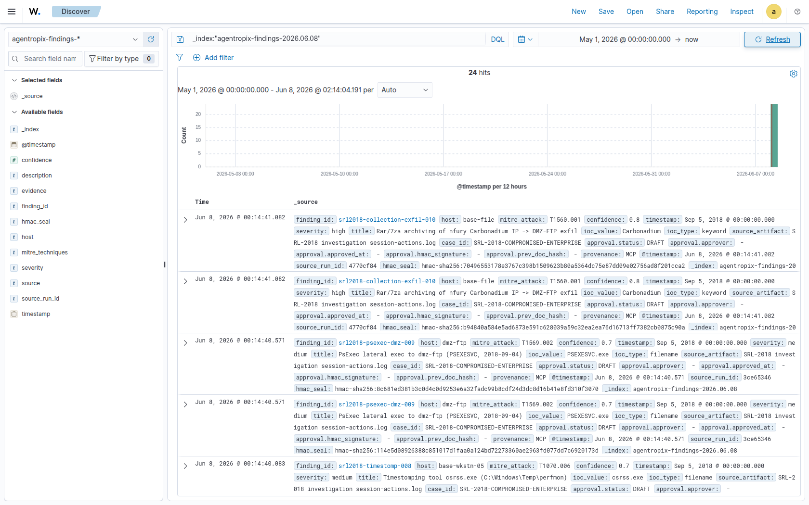
Discover — all SRL-2018 findings in agentropix-findings-2026.06.08 (24 hits)
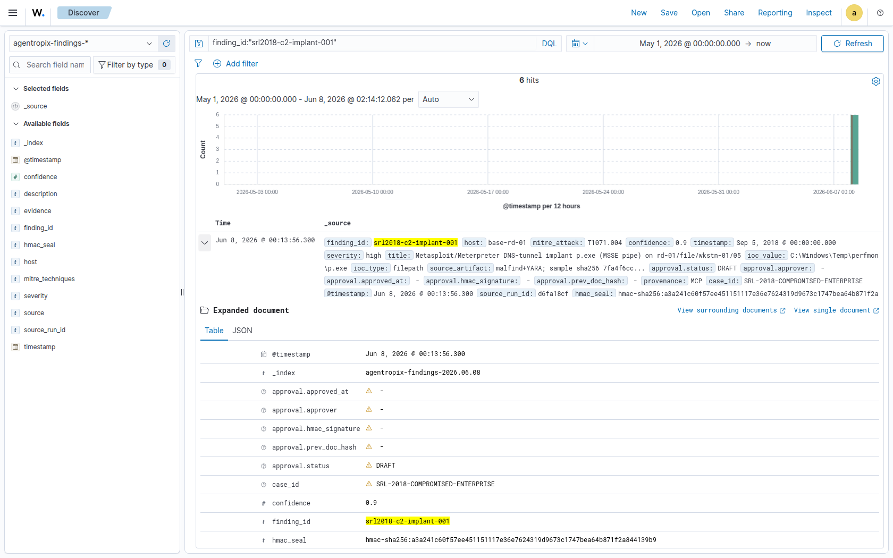
srl2018-c2-implant-001 — Metasploit/Meterpreter DNS-tunnel implant p.exe (MSSE pipe) on rd-01/f [T1071.004, base-rd-01]
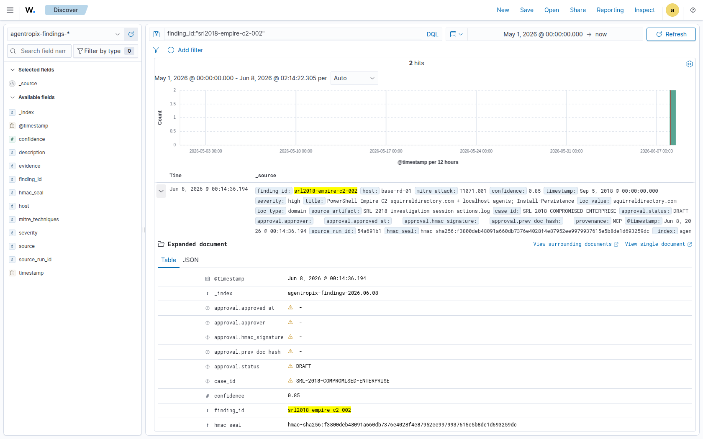
srl2018-empire-c2-002 — PowerShell Empire C2 squirreldirectory.com + localhost agents; Install [T1071.001, base-rd-01]
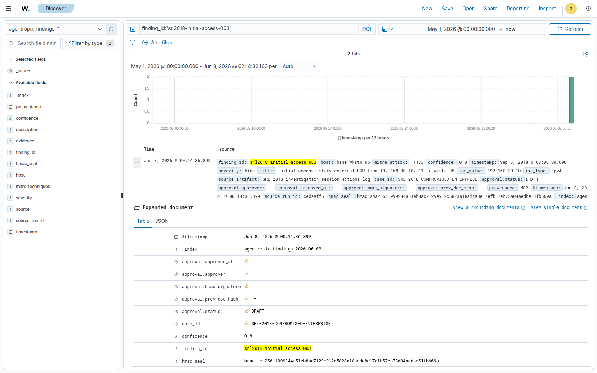
srl2018-initial-access-003 — Initial access: nfury external RDP from 192.168.30.10/.11 -> wkstn-05 [T1133, base-wkstn-05]
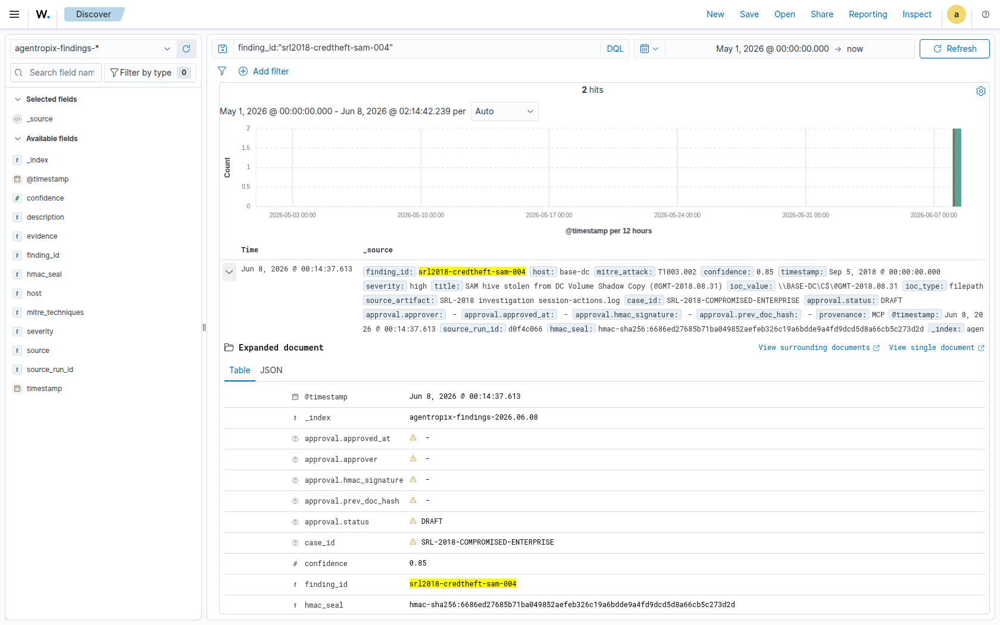
srl2018-credtheft-sam-004 — SAM hive stolen from DC Volume Shadow Copy (@GMT-2018.08.31) [T1003.002, base-dc]
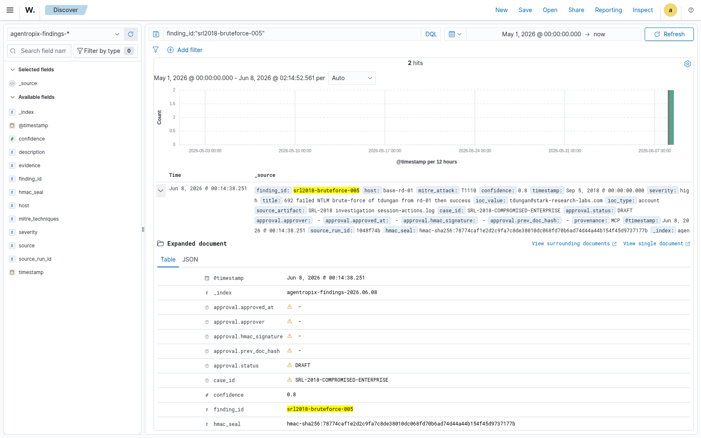
srl2018-bruteforce-005 — 692 failed NTLM brute-force of tdungan from rd-01 then success [T1110, base-rd-01]
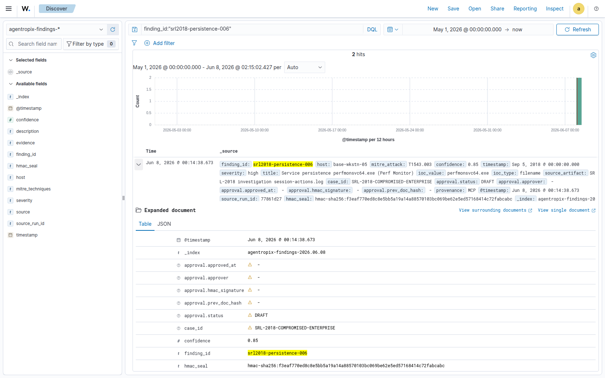
srl2018-persistence-006 — Service persistence perfmonsvc64.exe (Perf Monitor) [T1543.003, base-wkstn-05]
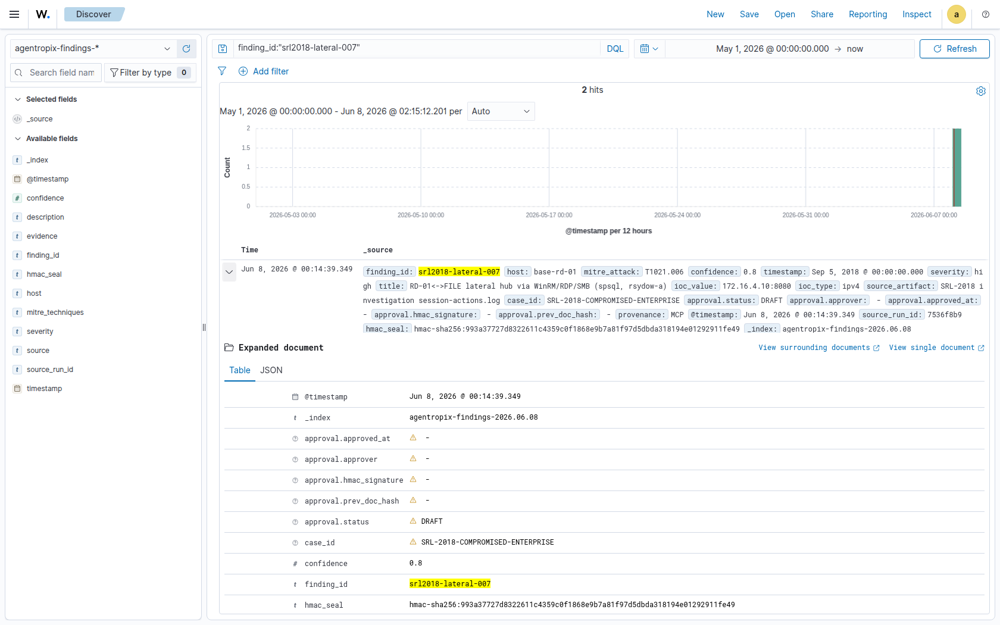
srl2018-lateral-007 — RD-01<->FILE lateral hub via WinRM/RDP/SMB (spsql, rsydow-a) [T1021.006, base-rd-01]
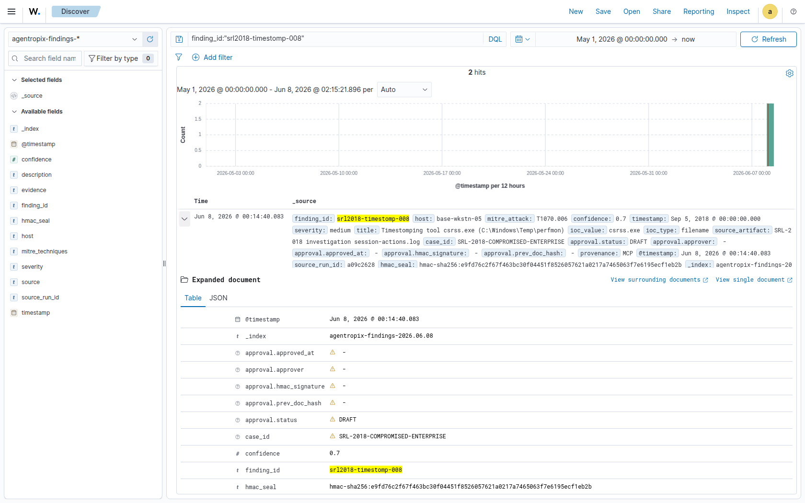
srl2018-timestomp-008 — Timestomping tool csrss.exe (C:\Windows\Temp\perfmon) [T1070.006, base-wkstn-05]
srl2018-psexec-dmz-009 — PsExec lateral exec to dmz-ftp (PSEXESVC, 2018-09-04) [T1569.002, dmz-ftp]
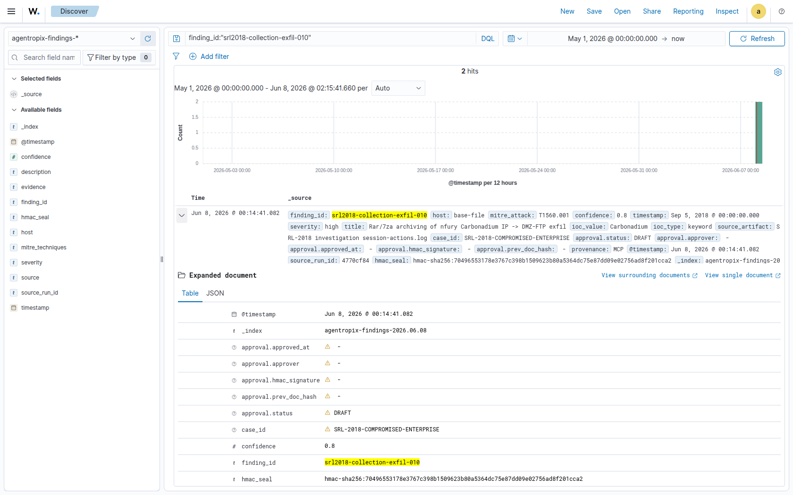
srl2018-collection-exfil-010 — Rar/7za archiving of nfury Carbonadium IP -> DMZ-FTP exfil [T1560.001, base-file]
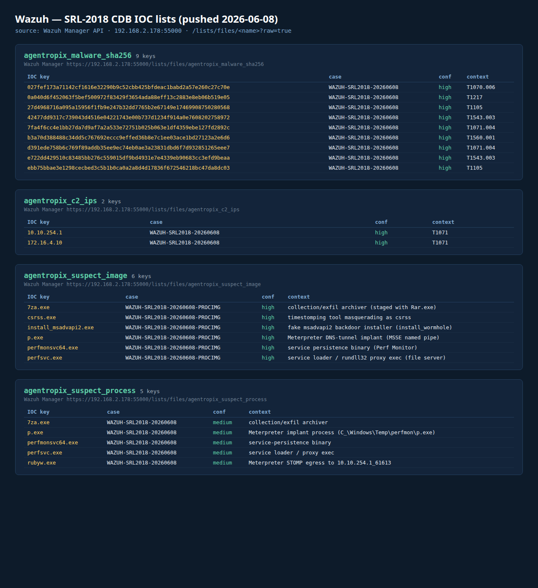
Wazuh Manager CDB IOC lists — 9 hashes + 2 C2 IPs + 6 suspect images + 5 suspect processes